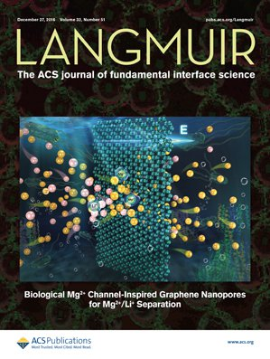

Contact
Contact
Phone:+86 19821376973
Email:qingwei.gao@ltu.se,qwgao@ecust.edu.cn
Affiliation:School of Chemical Engineering,East China University of Science and Technology
Visiting address: Meilong Road 130, 200237 Shanghai, China
Research interest
I am interested in the unique microstructure of ions, small organic molecule, ionic liquid under nanoconfinement and trying to find out the influence of it on the properties of thermodynamics through molecular simulations. Gaining a fundamental understanding for applications of nano materials in catalysis, membrane processes, and energy storage..
Eublication
2017.10-2020.11 Ph.D, Energy engineering, Luleå University of Technology, Sweden
2015.9-2020.6 Ph.D, Chemical engineering, Nanjing Tech University, China
2011.9-2015.6 B.E., Light-chemical engineering, Changzhou University, China
Publications
15.Yihui Dong, Aatto Laaksonen, Feng Huo, Qingwei Gao and Xiaoyan Ji, Hydrated Ionic Liquids Boost the Trace Detection Capacity of Proteins on TiO2 Support, Langmuir, 2021, 37(16), 5012–5021 doi.org/10.1021/acs.langmuir.1c00525
14.Sunday T. Oyinbo, Tien-Chien Jen, Peter Ozaveshe Oviroh and Qingwei Gao, Nanoindentation study in cold gas dynamic sprayed thin films using molecular dynamics simulation, Materials Today: Proceedings, 2021, 44, 1911-1915 doi.org/10.1016/j.matpr.2020.12.093
13.Yumeng Zhang, Yajing You, Qingwei Gao, Cheng Zhang, Shanshan Wang,Yao Qin, Yudan Zhu and Xiaohua Lu, Molecular insight into flow resistance of choline chloride/urea confined in ionic model nanoslits,Fluid Phase Equilibria, 2021, 533, 112934 doi.org/10.1016/j.fluid.2020.112934
12.Sunday T. Oyinbo, Tien-Chien Jen, Qingwei Gao and Xiaohua Lu, A simulation study of methane-hydrogen gas mixture permeation through nanoporouspalladium membrane using molecular dynamics, Vacuum, 2020, 182, 109804 doi.org/10.1016/j.vacuum.2020.109804
11.Qingwei Gao, Yao Qin, Yumeng Zhang, Shanshan Wang, Yudan Zhu, Xiaoyan Ji and Xiaohua Lu, Preliminary study on mechanism of confined mass transfer and separation: “Secondary confinement” effect of interfacial adsorption layer, CIESC Journal, 2020, 71(10), 4670-4677 doi.org/10.11949/0438-1157.20200765
10.Qingwei Gao, Yumeng Zhang, Aatto Laaksonen, Yudan Zhu, Xiaoyan Ji, Shuangliang Zhao, Yaojia Chen and Xiaohua Lu, Effect of dimethyl carbonate on the behavior of water confined in carbon nanotube, Chinese Journal of Chemical Engineering, 2021, 31, 177-185 doi.org/10.1016/j.cjche.2020.10.041
9.Qingwei Gao, Nanhua Wu, Yao Qin, Aatto Laaksonen, Yudan Zhu, Xiaoyan Ji and Xiaohua Lu, Molecular insight into wetting behavior of deep eutectic solvent droplets on ionic substrates: A molecular dynamics study, Journal of Molecular Liquids, 2020, 319, 114298 doi.org/10.1016/j.molliq.2020.114298
8.Qingwei Gao, Yumeng Zhang, Shuting Xu, Aatto Laaksonen, Yudan Zhu, Xiaoyan Ji and Xiaohua Lu, Physicochemical properties and structure of fluid at nano-/micro-interface: Progress in simulation and experimental study, Green Energy & Environment, 2020, 5(3), 274-285 doi.org/10.1016/j.gee.2020.07.013
7.Nana Zhao, Jiawei Deng, Yudan Zhu, Yaojia Chen, Yao Qin, Yang Ruan, Yumeng Zhang, Qingwei Gao and Xiaohua Lu, Atomistic insights into the effects of carbonyl oxygens in functionalized graphene nanopores on Ca2+/Na+ sieving, Carbon, 2020, 164, 305-316 doi.org/10.1016/j.carbon.2020.04.018
6.Yao Qin, Nana Zhao, Yudan Zhu, Yumeng Zhang, Qingwei Gao, Zhongyang Dai, Yajing You and Xiaohua Lu, Molecular insights into the microstructure of ethanol/water binary mixtures confined within typical 2D nanoslits: The role of the adsorbed layers induced by different solid surfaces, Fluid Phase Equilibria, 2020, 509, 112452 doi.org/10.1016/j.fluid.2019.112452
5.Yumeng Zhang, Yudan Zhu, Anran Wang, Qingwei Gao, Yao Qin, Yaojia Chen and Xiaohua Lu, Progress in molecular-simulation-based research on the effects of interface-induced fluid microstructures on flow resistance, Chinese Journal of Chemical Engineering, 2019, 27(6), 1403-1415 doi.org/10.1016/j.cjche.2019.02.002
4.Jiahui Li, Yudan Zhu, Yumeng Zhang, Qingwei Gao, Wei Zhu, Xiaohua Lu, Yijun Shi, Extra low friction coefficient caused by the formation of a solid-like layer: A new lubrication mechanism found through molecular simulation of the lubrication of MoS2 nanoslits, Chinese Journal of Chemical Engineering, 2018, 26(12), 2412-2419 doi:10.1016/j.cjche.2018.02.027
3.Qingwei Gao, Yudan Zhu, Xiaoyan Ji, Wei Zhu, Linghong Lu, and Xiaohua Lu, Effect of water concentration on the microstructures of choline chloride/ urea (1:2) /water mixture, Fluid Phase Equilibria, 2018, 470, 134–139 doi:10.1016/j.fluid.2018.01.031
2.Qingwei Gao, Yudan Zhu, Yang Ruan, Yumeng Zhang, Wei Zhu, Xiaohua Lu, and Linghong Lu, Effect of adsorption alcohol layers on the behaviours of water molecules confined in graphene nanoslit: A molecular dynamics study, Langmuir, 2017, 33(42), 11467-11474 doi:10.1021/acs.langmuir.7b02038
1.Yang Ruan, Yudan Zhu, Yumeng Zhang, Qingwei Gao, Xiaohua Lu, and Linghong Lu, Molecular Dynamics Study of Mg2+/Li+ Separation via Biomimetic Graphene-Based Nanopores: The Role of Dehydration in Second Shell, Langmuir, 2016, 32(51), 13778–13786 doi:10.1021/acs.langmuir.6b03001
Conference and training experience
2014.08 ,Practice in Huada Chemical Industry Co., Ltd. Changzhou, China
2016.06 ,The 4th International Conference on Sustainable Chemical Product and Process Engineering, Nanjing, China
2016.08 ,Molecular dynamics training based on LAMMPS and NAMD, National Supercomputing Center, Guangzhou, China
2016.10 ,The 4th International Conference on Molecular Simulation, Shanghai, China
2017.11 ,Computational Chemistry- MD Simulations (NAMD), Umeå University,Umeå, Sweden
2019.05 ,The 8th International Congress on Ionic Liquids (COIL-8), Beijing, China (Oral)
2020.07 ,Symposium on Development of Chemical Engineering Discipline & Production, Teaching and Research of New Materials and New Energy, Guangxi, China
2020.11 , The 12th Global Chinese Chemical Engineers Symposium, Nanjing, China
Awards
2015.12 ,Second prize in academic scholarship of Nanjing Tech University
2016.10 ,4th International Conference on Molecular Simulation, BEST POSTER AWARD
2016.12 ,First prize in academic scholarship of Nanjing Tech University
2017.07 ,SICAM Full Scholarship
2017.10 ,National scholarship for graduate students
2017.12 ,Triple-a graduate student of Nanjing Tech University
2017.12 ,Second prize in academic scholarship of Nanjing Tech University
2018.12 ,First prize in academic scholarship of Nanjing Tech University
2020.06 ,Outstanding graduate student of Nanjing Tech University